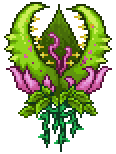

Plantera

|

|
Descrição
A Plantera é um chefe encontrado no jogo Terraria. Ela é considerada um dos chefes mais difíceis do jogo e é encontrada no Subterrâneo da selva
após derrotar todos os três chefes mecânicos (The Twins, The Destroyer e Skeletron Prime).
Para invocá-la, o jogador precisa derrotar todos os três chefes mecânicos e quebrar um Bulbo de Plantera encontrado no Subterrâneo da selva.
Estatísticas
Dano:44-62
Vida Máxima:30000
Defesa:36
Recompensas
Semente de Plantera (100%)
Tronco de Plantera (100%)
Lança de Esporos (100%)
Plantera Relógio de Pulso (100%)
Palma de Plantera (33.33%)
Flor de Esporo (33.33%)
Chave do Templo (100%)
Máscara da Plantera (14.29%)
Troféu da Plantera (10%)
Boss Anterior Próximo Boss